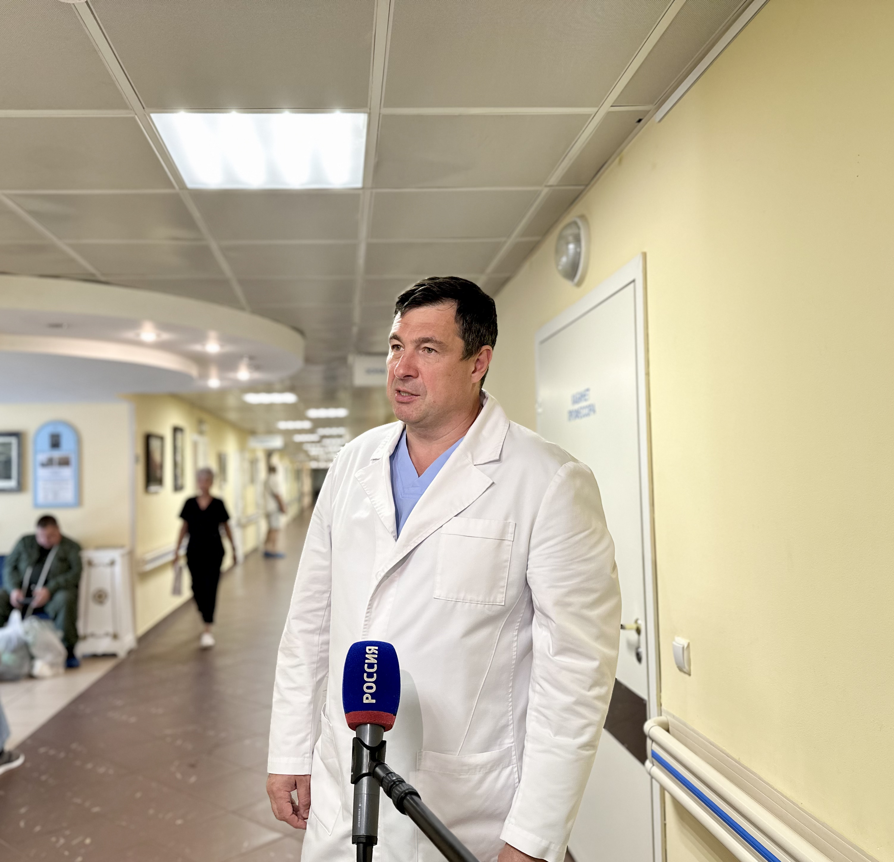
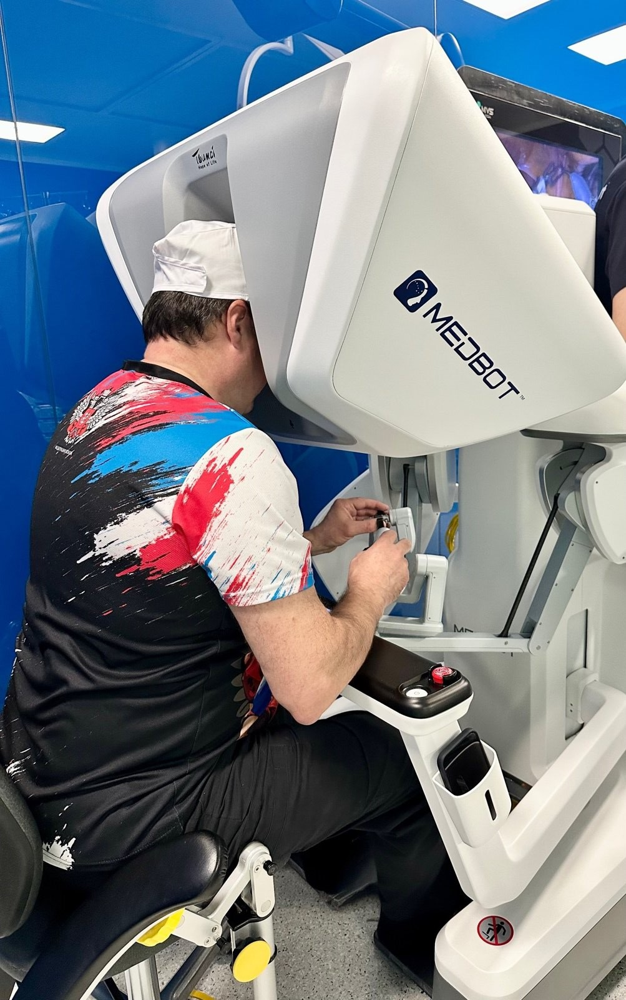
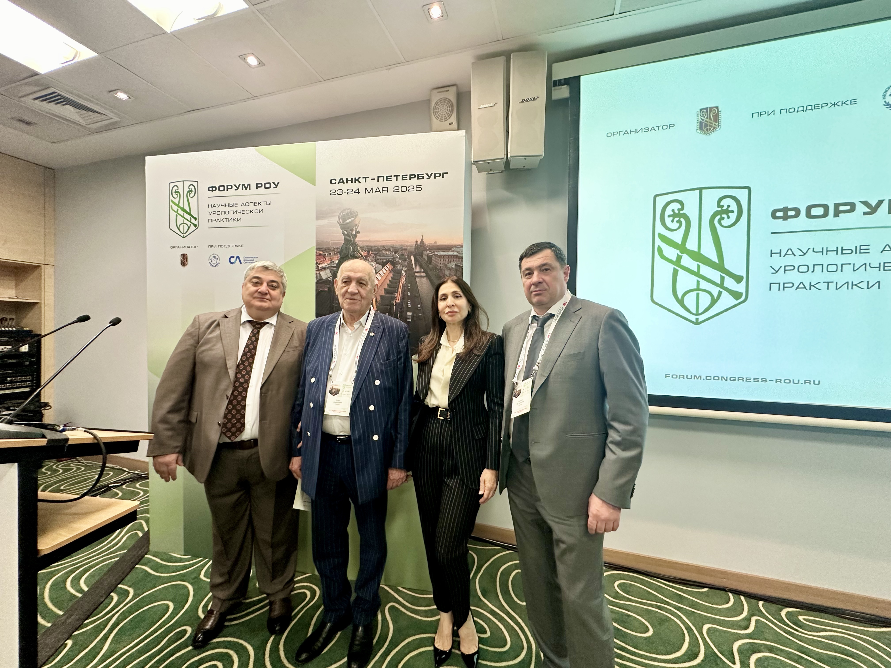
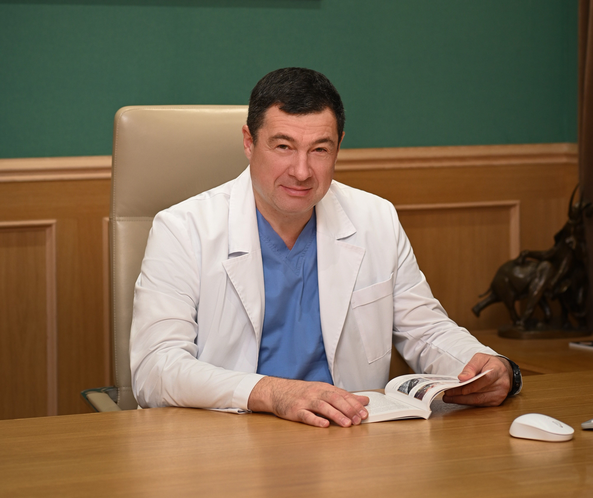
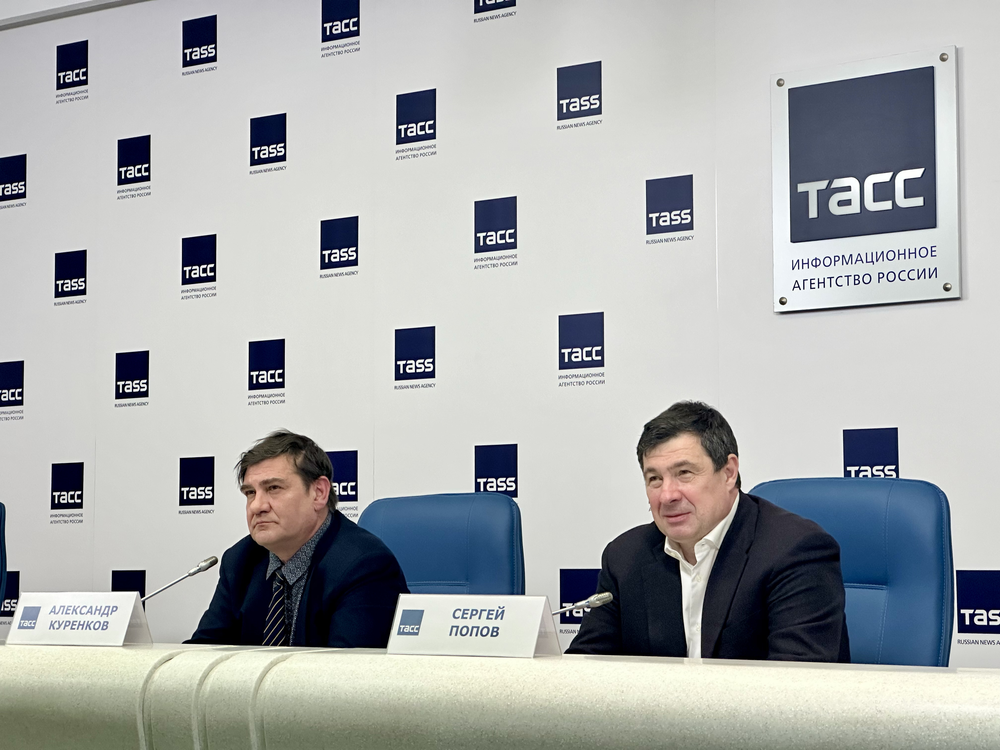
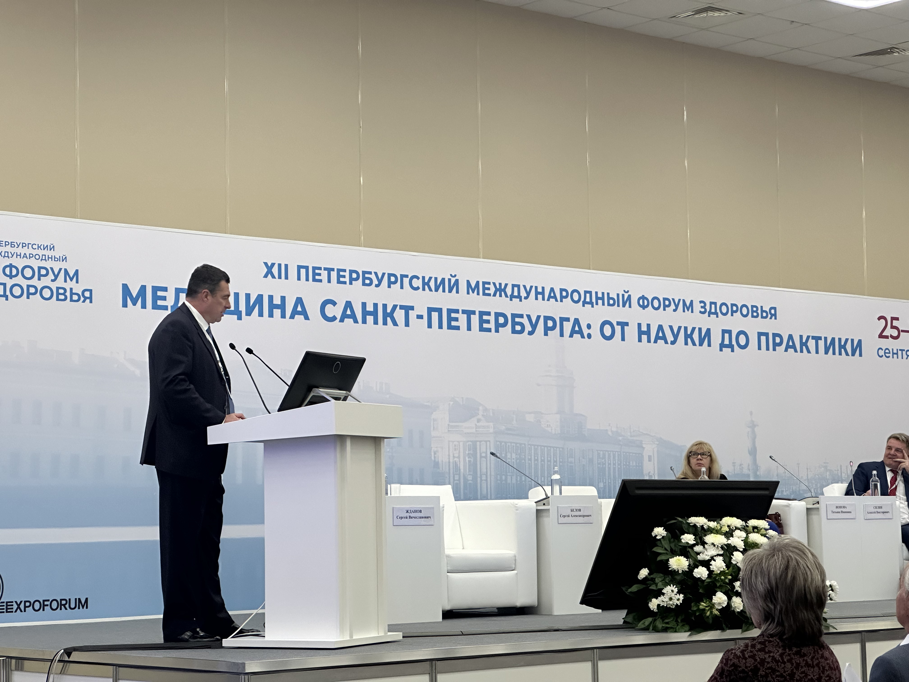
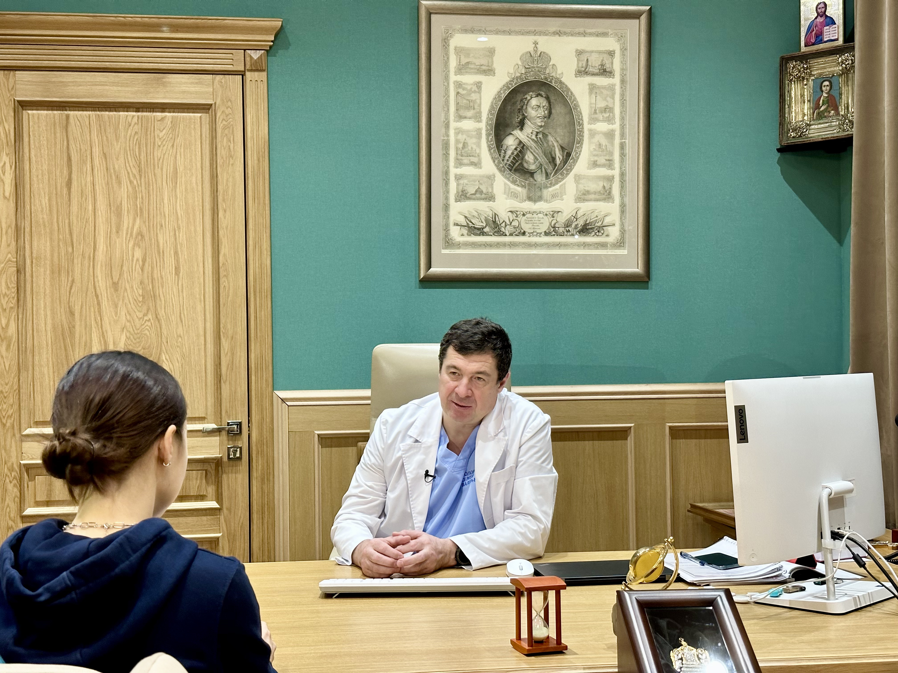

О руководителе
Сергей Валерьевич Попов — главный внештатный специалист-уролог Комитета по здравоохранению Правительства Санкт-Петербурга, Заслуженный врач РФ, доктор медицинских наук, профессор. Ведущий эксперт в области высокотехнологичной малоинвазивной урологии: владеет всеми видами эндоскопических, лапароскопических и робот-ассистированных вмешательств при урологической и онкоурологической патологии, выполняет все виды трансплантации почки.
Деятельность главного внештатного специалиста
- Совершенствование организации урологической помощи всем жителям Санкт-Петербурга: её доступности, качества и внедрение в практическую деятельность врачей современных технологий
- Координация работы урологических подразделений медицинских организаций города
- Участие в формировании городских программ развития специализированной помощи и льготного лекарственного обеспечения
- Экспертное сопровождение организационно-методических решений в урологии и онкоурологии
- Развитие трансплантации почки и планирование объёмов высокотехнологичной помощи
- Экспертные консультации по сложным клиническим случаям и междисциплинарные консилиумы для врачей города
Под его руководством в Санкт-Петербурге проводятся крупнейшие научно-практические конференции, которые объединяют представителей профессионального урологического и онкологического сообществ и создают пространство для живого диалога и конкретных решений врачей и учёных в вопросах диагностики и лечения заболеваний.
- В научно-практической конференции «Новый взгляд на старые проблемы в урологии» в качестве спикеров приняли участие академики РАН — С.Ф. Багненко (заместитель председателя Санкт-Петербургского отделения), А.Д. Каприн (главный внештатный специалист-онколог Минздрава РФ); Д.Ю. Пушкарь (главный внештатный специалист-уролог Минздрава РФ); А.Н. Разумов, А.А. Камалов и члены-корреспонденты РАН И.Ю. Коган, А.Г. Мартов. Приветствие участникам направила председатель Совета Федерации Валентина Ивановна Матвиенко.
- Международная междисциплинарная научно-практическая конференция «Эндоуроцентр митинг» проводится каждые два года и объединяет более 5000 участников из России, ближнего и дальнего зарубежья.
Специализация
- Эндоскопическая урология
- Лапароскопическая хирургия
- Онкоурология
- Робот-ассистированная хирургия
Направления работы
- Оперативная урология и эндовидеоурология
- Профилактика и лечение мочекаменной болезни
- Консервативное и хирургическое лечение аденомы предстательной железы
- Ранняя диагностика и лечение рака предстательной железы, опухолей мочевого пузыря, почек и мочеточников
- Диагностика и лечение инфекционно-воспалительных заболеваний мочевыделительной и половой систем
Приоритетные направления
- Эндоскопическое лечение заболеваний верхних и нижних мочевыводящих путей с использованием гибких эндоскопов: МКБ, стриктуры мочеточника и уретры, реканализация при облитерации мочеточника, коррекция стриктур мочеточника у пациентов с пересаженной почкой, эндоскопическая хирургия новообразований полостной системы почки, ДГПЖ
- Традиционные лапароскопические, робот-ассистированные и монопортовые методы лечения в урологии: опухоли почки и полостной системы, МКБ, рак предстательной железы, доброкачественная гиперплазия предстательной железы, стриктуры мочеточника, опухоли мочевого пузыря
Высокотехнологичные операции
Выполняет наиболее сложные и высокотехнологичные робот-ассистированные и лапароскопические оперативные вмешательства: радикальная простатэктомия, резекция почки и нефрэктомия, цистэктомия с илеоцистопластикой, позадилонная аденомэктомия при больших размерах предстательной железы, симультанные и реконструктивно-пластические операции местными тканями с использованием сегментов ЖКТ.
Научная деятельность
Автор 430 научных публикаций, включая 7 монографий, 15 учебно-методических пособий и 32 патента на изобретения. Среди его трудов, получивших широкую известность в медицинско-научном сообществе, — монография «Уретероскопия» и учебно-методическое пособие «Эндовидеохирургическое лечение пациентов с опухолями почек». Под его научным руководством защищены 11 кандидатских диссертаций; 15 кандидатских и 5 докторских на данный момент находятся в стадии подготовки.
Член Российского общества урологов, Российского общества по эндоурологии и новым технологиям, Европейской ассоциации и Американского общества урологов. Член оргкомитета и председатель XXV Конгресса Российского общества урологов. Является председателем и модератором секций, спикером на международных конгрессах и конференциях.
Выступает оператором-экспертом на хирургических мастер-классах в России и за рубежом. В данном случае он не просто демонстрирует операцию, но и активно вовлекает участников: подробно комментирует ход оперативного вмешательства и отдельные шаги, показывает и объясняет нюансы техники, отвечает на вопросы. Аудитория онлайн-трансляций мастер-классов профессора С.В. Попова достигает нескольких тысяч человек.
Образование и карьера
- 1970 — родился в городе Чистополе Татарской АССР
- 1996 — успешно окончил Военно-медицинскую академию им. С.М. Кирова, направлен врачом-хирургом на подводную лодку Северного флота
- 1998 — врач урологического отделения СПб ГУЗ «Медико-санитарная часть № 18»
- 2000 — клиническая ординатура по урологии в СПбГМА им. И.И. Мечникова
- 2005 — кандидатская диссертация «Калькулезная обструкция тазовых отделов мочеточников: виды, диагностика, лечение»
- С 2005 — главный врач СПб ГБУЗ «Клиническая больница Святителя Луки»
- 2014 — докторская диссертация «Оптимизация эндоскопических методов лечения при заболеваниях верхних мочевыводящих путей и почек (клинико-экспериментальное исследование)»
- 2022 — основал кафедру хирургии и урологии им. профессора Б.И. Мирошникова Санкт-Петербургского медико-социального института, в последующем году назначен заведующим кафедрой
Преподавательская и экспертная деятельность
- Профессор кафедры урологии Военно-медицинской академии им. С.М. Кирова, доцент кафедры урологии СЗГМУ им. И.И. Мечникова и кафедры хирургии с курсом урологии медицинского факультета СПбГУ
- Руководитель цикла «Современные возможности эндоскопической и лапароскопической урологии» компании «Олимпус» на базе центра, ведущий эксперт «Олимпус» в области хирургии
- Ведёт курс «Эндовидеохирургическое лечение рака почки» в Образовательном центре высоких медицинских технологий (г. Казань)
- Действующие сертификаты по специальностям «хирургия», «урология», «онкология» и «организация здравоохранения»
Награды и достижения
- Заслуженный врач Российской Федерации
- Почётное I место в номинации «Петербургский доктор года» общегородского конкурса «Клиника года»
- Под его руководством клиника стала победителем в номинации «Лучшая клиника в области урологии»
- Неоднократно награждён грамотами и благодарностями Губернатора Санкт-Петербурга, Правительства и Законодательного Собрания Санкт-Петербурга
Центр в цифрах
Ключевые показатели работы центра
Ключевые направления развития
Приоритеты, которые определяет руководитель центра
Современная диагностическая база
Оборудование экспертного уровня
Центр оснащён роботизированным хирургическим комплексом da Vinci Xi, современными эндоскопическими стойками, лазерными системами для контактной литотрипсии и энуклеации простаты.
Диагностическая база включает мультиспиральную компьютерную томографию, ультразвуковые аппараты экспертного класса и уродинамические комплексы.

Центр в фотографиях
Работа и достижения









Запись на личную консультацию
Сергей Валерьевич лично рассматривает сложные и запущенные клинические случаи
Телефон приёмной
+7 (812) 57-611-57
доб.
приёмной
Часы работы
Пн–Пт: 8:30 – 20:00
Сб–Вс: 8:30 –
17:00
Адрес
КБ «Святителя Луки»
Санкт-Петербург, ул.
Чугунная, д. 46